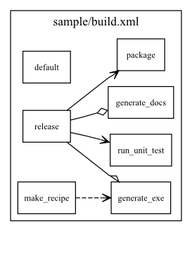
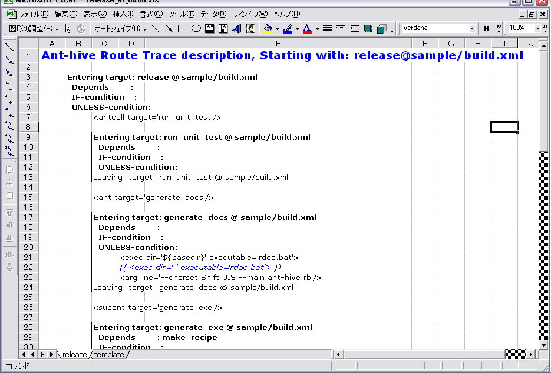

| Class | AntHiveDocument::FirstStep |
| In: |
document.rb
|
| Parent: | Object |
何はともあれ使ってみましょう。anthiveにはsampleを同梱しています。
sampleディレクトリの構造は以下のようになっています。
sample/ build.xml VERSION
ここで、build.xmlはとあるアプリケーションのリリース用antスクリプトです。 VERSIONファイルはプロパティファイルとして使用しています。
このbuild.xmlの静的な構造を暴いてみましょう。 コマンドラインより、以下のように実行してください。(以下、例としてはWin32バイナリ版のant-hive.exeを使用している場合を想定しています。)
E:\Home\kz\anthive>ant-hive -r sample -M build.xml
以下のようなログがずらずらと表示されて、エラーらしきものが見つからなければOKです。
I, [2008-01-27T21:12:03.140000 #996] INFO -- AntHive::CUI: ant-hive is starting. Log level is [ 1 ]. I, [2008-01-27T21:12:04.281000 #996] INFO -- AntHive::Controller: ======================================== I, [2008-01-27T21:12:04.296000 #996] INFO -- AntHive::Controller: Ant-hive is running with these settings. I, [2008-01-27T21:12:04.296000 #996] INFO -- AntHive::Controller: root_directory : [ sample ] I, [2008-01-27T21:12:04.312000 #996] INFO -- AntHive::Controller: request for map : [ build.xml ] I, [2008-01-27T21:12:04.312000 #996] INFO -- AntHive::Controller: Starting static-parse for [ sample/build.xml ]. I, [2008-01-27T21:12:04.390000 #996] INFO -- AntHive::Controller: Static map for [ sample/build.xml ] was generated. I, [2008-01-27T21:12:13.046000 #996] INFO -- AntHive::Controller: [ sample.svg ] was successfully generated as MAP.
そしてカレントディレクトリに、sample.dot と sample.svg が出力されている筈です。 sample.svgが、buld.xmlの静的構造を示した図です。SVGビューワで表示してみてください。 
antスクリプト内の各ターゲットは、1つの箱(Node)で表現されます。 そして、その箱と箱の間に矢印(Edge)が引かれている場合には、その間に何らかの実行順が存在することを表現しています。 凡例は以下のとおりです。
次に、sample/build.xmlのreleaseターゲットを実行したときに、どのような経路を用いてビルドが行われているのかを 確認しましょう。 コマンドラインより、以下のように実行してください。
E:\Home\kz\anthive>ant-hive -r sample -R "release@build.xml"
以下のようなログがずらずらと表示されて、エラーらしきものが見つからなければOKです。
I, [2008-01-27T21:53:19.828000 #1264] INFO -- AntHive::CUI: ant-hive is starting. Log level is [ 1 ]. I, [2008-01-27T21:53:24.937000 #1264] INFO -- AntHive::Controller: ======================================== I, [2008-01-27T21:53:24.953000 #1264] INFO -- AntHive::Controller: Ant-hive is running with these settings. I, [2008-01-27T21:53:24.953000 #1264] INFO -- AntHive::Controller: root_directory : [ sample ] I, [2008-01-27T21:53:24.953000 #1264] INFO -- AntHive::Controller: request for map : [ ] I, [2008-01-27T21:53:24.953000 #1264] INFO -- AntHive::Controller: request for route : [[build.xml,release]] I, [2008-01-27T21:53:24.968000 #1264] INFO -- AntHive::Controller: Starting static-parse for [ sample/build.xml ]. I, [2008-01-27T21:53:25.078000 #1264] INFO -- AntHive::Controller: Starting dynamic-evaluation for File:[ sample/build.xml ], Target:[ release ], Options:[ ]. W, [2008-01-27T21:53:25.296000 #1264] WARN -- AntHive::RouteTraceGenerator: writing to Microsoft Excel. -- DO NOT USE Excel -- until ends. I, [2008-01-27T21:53:30.531000 #1264] INFO -- AntHive::Controller: [ sample/release_at_build.xls ] was successfully generated for [ release ]@[ build.xml ] with [ ], ROUTE.
そして、sampleディレクトリに release_at_build.xls ファイルが作成されていることを確認してください。 このファイルはこのようになっているはずです。 
releaseターゲットからの動的経路を表現するこのROUTEでは、MAPとは異なり、Antスクリプトのどの行がどのタイミングで実行されるかを ある程度の正確さで表現しています。 この例では、
等々をこの出力ファイルに表現しています。